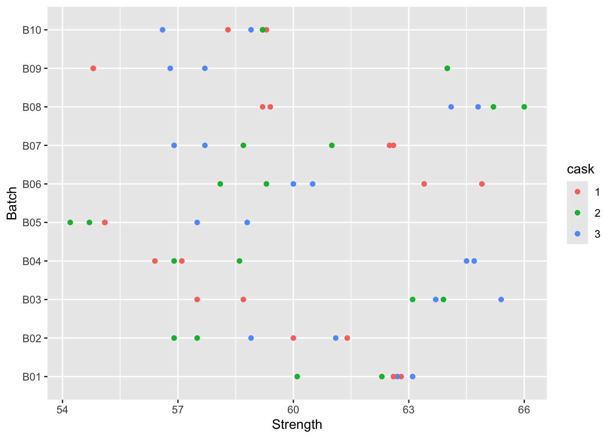
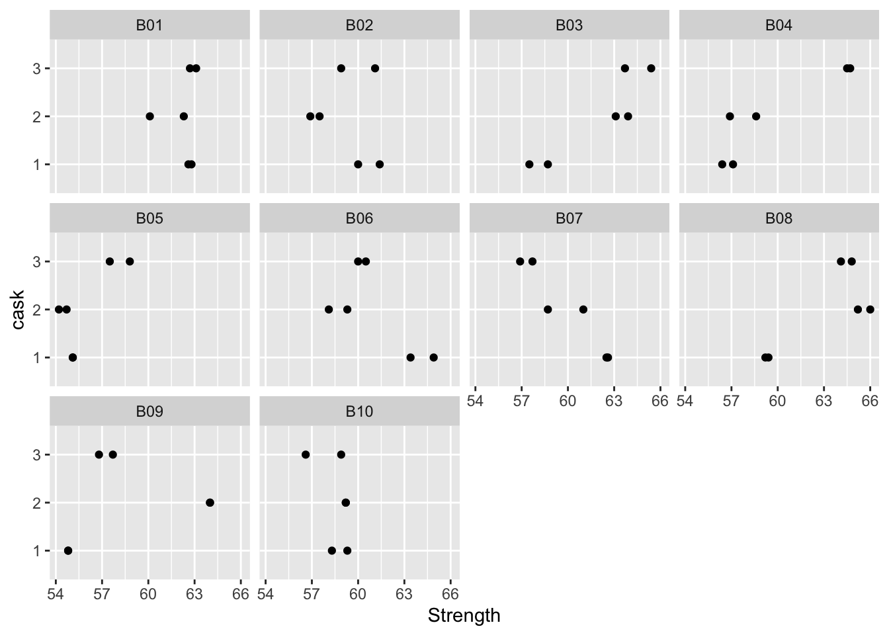
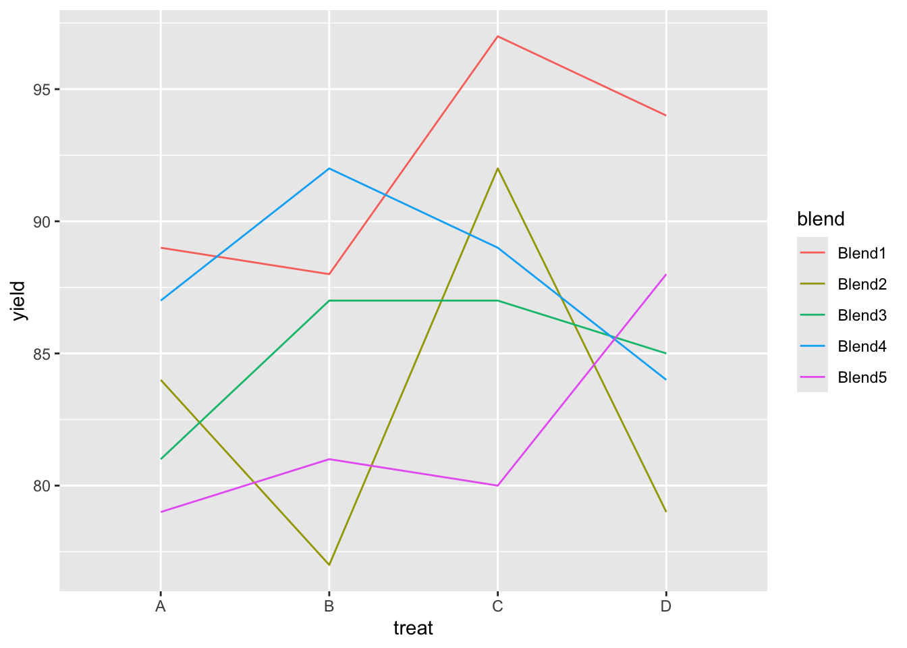

1.1 A problem with paste
Example: Paste manufacture
A company uses a chemical paste in one of its production processes and receives deliveries of the paste in batches. The quality control department of the company is concerned about the variability in the strength of paste and decided to investigate. Ten batches of paste were randomly selected for a number of deliveries (one batch is received per delivery). From each of the batches a random sample of three casks was selected and two random determinations were made from random samples from each cask.
Where does most of the variability lie – at the batch, cask or individual measurement level?
(Data source: Intermediate Statistical Methods by G B Wetherill.
First we read the data.
ggplot graphics give some helpful options on how the data can be plotted.
library(ggplot2)
ggplot(d, aes(Strength, Batch, col = cask)) + geom_point()
ggplot(d, aes(Strength, cask)) + geom_point() +
facet_wrap(vars(Batch))
A mixed effects model allows different (hierarchical) levels of error to be constructed. Each batch has its own ‘adjustment’ from the overall mean. Within each batch, each cask has its own further ‘adjustment’ from the overall and batch means. Within each cask, the individual within-cask measurements can be viewed as further ‘adjustments’ from the overall, batch and cask means. If we index the batches, casks and within-cask measurements by \(b\), \(c\) and \(iw\), then we can express this in a model as:
\[
y_{bcw} = \mu + \varepsilon_b + \varepsilon_{bc} + \varepsilon_{bcw}
\]
where
\[
\varepsilon_{b} \sim N(0, \sigma^2_b), \hspace{3em}
\varepsilon_{bc} \sim N(0, \sigma^2_c), \hspace{3em}
\varepsilon_{bcw} \sim N(0, \sigma^2_w)
\]
The nlme package gives us the tools to fit such a model. The summary requires a bit of interpretation, but close inspection shows that the estimates of standard deviation at batch, cask, and within-cask levels are 1.287348, 2.904061 and 0.8234125 respectively. That suggests that the cask level is where the variation is strongest.
## Estimate Std. Error t value
## (Intercept) 60.05333 0.6768701 88.7221When using any model, we would like to have some reassurance that it describes the data adequately. Plot of residuals provide an informal, but very useful, way of checking this. If the model is adequate then the residuals should simply display random variation, with no obvious patterns or structure. The plot below reassures us that the model is an adequate fit.
